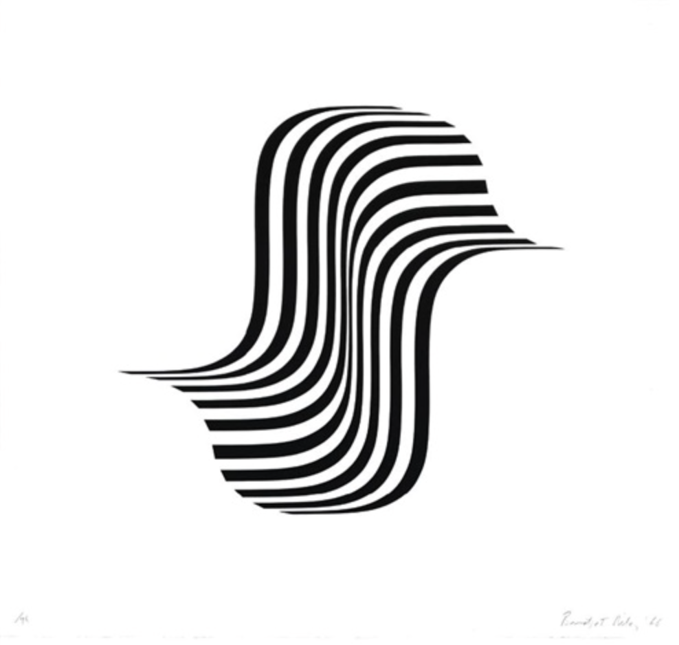
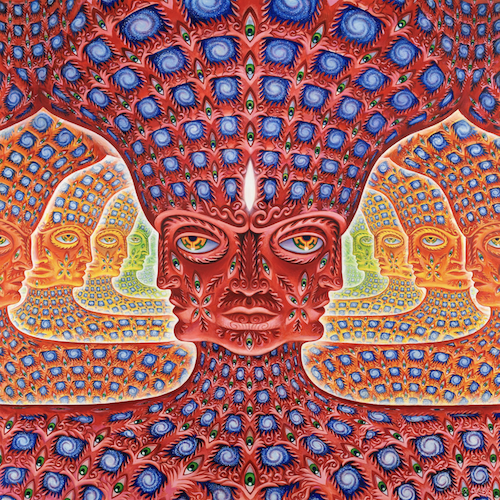
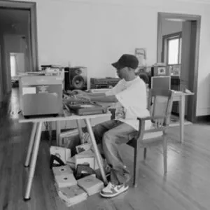

Bridget Riley is a British Optical Illusion artist, mostly working with paint as her medium. The visually stimulating experience I get when viewing her work, sparks my curiosity around how she came about combining shapes, lines and geometry.


J Dilla (Jay Dee) is a hip hop producer whose work was focused on preserving a more humanisitic and emotional expression approach to producing instrumental boom bap beats. His philosophy was similar to that of the Japanese philosophy 'wabi sabi' (beauty in imperfection) and that is what inspires me most about him.
This project really tested my patience with adding the alt text in the same tag as 'img src' tag. I first thought they needed to be in separate tags. After trial and error attempts and going back over the lecture slides, I was able to figure out that they both belong in the same tag. Same experience with getting the proper tag for the external hyperlink, this was due to my negligence of watching the Hyperlink Absolute URLs lecture. For the upcoming project and going forward, I aim to start as early as my schedule will allow me. Upon reflecting about the connection between my 3 artist inspirations, I recognized that each of them developed their own approach that defied the typical processes of creation, mainly by learning from their own inspirations and shaping their own creation process, unique to their chosen medium. Also, all 3 have been viewed by authorities in their field of creation as outcasts, breaking the rules at least once during their entire journey to their own sense of mastery. If I had more time, I would play around with the CSS guidelines, trying out different color palettes for fun, as well as different fonts. I also want to experiment with the layout, eventually.